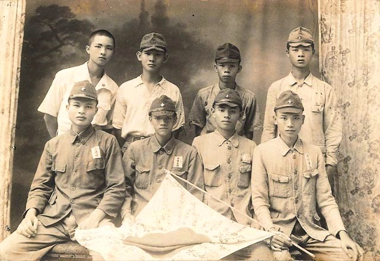

研究動機
在之前的課堂報告中，我曾經接觸過日治時期相關人物與歷史背景，其中也查找過與台灣青年處境有關的資料 。在整理資料的過程中，我發現日治末期的台灣青年在升學、就業以及未來發展方面，其實受到殖民制度與戰時社會環境很大的影響 。
「當時的青年除了面臨教育與職業選擇的問題，同時也處在日本帝國推動皇民化與戰時動員的時代背景之下 。」
因此他們的人生道路往往與時代局勢緊密相關 。這讓我對於當時台灣青年究竟有哪些可能的出路，以及他們在那樣的歷史環境中如何面對未來，產生了進一步探討的興趣 。

圖：戰時體制下被動員參與軍事相關活動的青年意象
研究目的
本研究主要希望透過相關歷史資料與學者研究，整理日治末期（1937–1945）台灣青年可能面臨的幾種主要出路，如繼續升學、進入殖民政府體體系工作、回到地方從事農業或其他職業，以及在戰時體制下被動員參與軍事相關活動等 。
同時藉由分析當時的教育制度、殖民政策與戰爭背景，進一步理解這些因素如何影響台灣青年的選擇與發展 。透過這樣的討論，可以更清楚看見日治末期台灣青年所處的歷史環境，以及他們在殖民社會中的位置 。